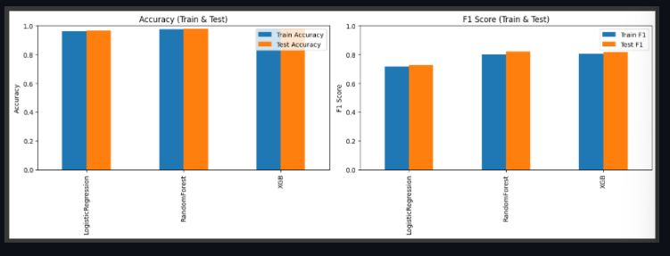

🏥 Diabetes Prediction Machine Learning
Early Health Risk Detection Using Classification Models (Logistic Regression, Random Forest, & XGBoost)

Overview
Diabetes mellitus is a chronic condition impacting millions worldwide. This machine learning project analyzes a comprehensive medical dataset comprising 100,000 patient records across 9 clinical variables (including BMI, HbA1c levels, and blood glucose) to enable early risk detection, reduce health complications, and support medical decision-making.
🎯 Problem Statement & Objectives
- Problem Statements: How does diabetes prevalence vary across age groups and gender? What are the average differences in BMI, blood glucose, and HbA1c between diabetic and non-diabetic groups? Which clinical features are most critical in predicting diabetes likelihood?
- Goals & Solutions: Analyzed demographic distributions and key clinical features through Exploratory Data Analysis (EDA), followed by training and evaluating non-linear classification models (Logistic Regression, Random Forest, and XGBoost) to optimize predictive accuracy and identify core feature importance.
📊 Model Performance & Evaluation Metrics
| Model Classification | Train Accuracy | Test Accuracy | Train F1-Score | Test F1-Score |
|---|---|---|---|---|
| Logistic Regression | 96.36% | 96.65% | 71.55% | 72.77% |
| Random Forest | 97.47% | 97.76% | 80.00% | 81.87% |
| XGBoost Classifier | 97.50% | 97.73% | 80.30% | 81.73% |
💡 Strategic Clinical & Technical Insights
- Top Predictive Indicators: Feature importance analysis confirmed that HbA1c levels, blood glucose levels, and BMI are the primary diagnostic indicators driving model predictions.
- Model Generalization: All evaluated models demonstrated stable and consistent performance between training and testing splits with no signs of overfitting, ensuring reliable generalizability on unseen patient data.
- Clinical Impact: High accuracy (up to 97.76%) and robust F1-scores validate the feasibility of deploying these models to support early health screening and medical risk management.
⚙️ Development Workflow
1
Data Understanding
Analyzing 100k Records & 9 Variables
➔
2
Exploratory EDA
Demographic & Clinical Feature Analysis
➔
3
Model Training
Logistic Regression, RF & XGBoost
➔
4
Evaluation & Insights
Accuracy, F1-Score & Feature Importance
🛠️ Tech Stack & Skills Highlighted
Machine Learning Models:
Data Science & Evaluation: